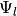
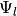
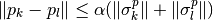

SparsityOraclePSHAWP¶
About the SparsityOraclePSHAWP class¶
The WaveBlocks Project
@author: R. Bourquin @copyright: Copyright (C) 2010, 2011, 2012, 2013, 2014 R. Bourquin @license: Modified BSD License
Inheritance diagram¶
Class documentation¶
- class WaveBlocksND.SparsityOraclePSHAWP(factor=1.5)¶
This class implements an oracle by looking at a phase space distance.
- __init__(factor=1.5)¶
Initialize an oracle for estimating if a specific overlap integral is approximately zero. The oracle works by computing first and second moments and of the highest order function of both wavepackts
 and  for both, position and momentum. Then we compute the
estimators:
and  for both, position and momentum. Then we compute the
estimators:and

Parameters: factor – The factor  in the phase space distance.
The default value of 1.5 should be reasonable in most cases.
in the phase space distance.
The default value of 1.5 should be reasonable in most cases.
- bias(bramink=None, ketmink=None)¶
Bias the sparsity oracle. The oracle tends to underestimate the wavepacket spread for small basis shapes and therefore small maximal indices . This method allows to set a minimal
 for both the bra
and ket independently.
for both the bra
and ket independently.Parameters: - bramink – Minimal for
- ketmink – Minimal for
- bramink – Minimal
- is_not_zero(pacbra, packet, component=None)¶
Try to estimate if the overlap integral is zero or at least negligible.
Parameters: - pacbra – The packet that is used for the ‘bra’ part.
- packet – The packet that is used for the ‘ket’ part.
- component – The component of the packet that is considered.
Returns: True or False whether the inner product is negligible.
- pacbra – The packet